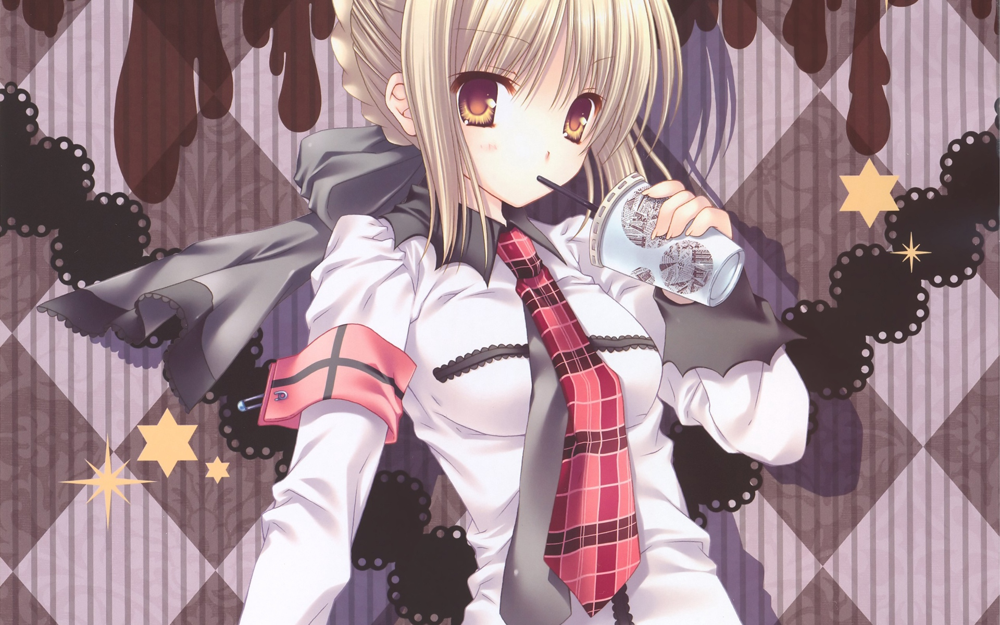

<!DOCTYPE html>
<html lang="en">
<head>
    <meta charset="UTF-8">
    <meta http-equiv="X-UA-Compatible" content="IE=edge">
    <meta name="viewport" content="width=device-width, initial-scale=1.0">
    <title>Document</title>
    <style>
        html{
            perspective: 800px;
        
        }
        body{display: flex;justify-content: center;}
        #ul{
            width:100px;
            height:100vh;
            /* height:100%; */
            padding: 0;margin: 0px;display: flex;flex-direction: column;justify-content: center;
            align-items: center;
            overflow:auto;
        }
       #ul>li{
            width: 80%;
            counter-increment:num 1;
            background-color: burlywood;
            display: flex;justify-content: center;
        }
        #ul>li:hover{
            background-color: orange;
        }
        #ul>li::before{
            content:counter(num);
            display: block;
        }
        
        #right{
            width:93%;            /* width:1460px; */
            height:100vh;
            /* height: 264vh; */
            background-color: yellowgreen;
            border: 1px solid pink;
            background-image: url(./作业/img/西施.jpg);
            background-position: center center;
            background-size: cover;
            /* background-attachment: fixed; */
            background-repeat: no-repeat;
            position:relative;
            color:white;text-shadow: 0px 0px 10px red;
            overflow: hidden;
        }
        .yellowgreen{
            background-color: yellowgreen;
        }
        .yellow{
            color: yellow;
        }
        .gainsboro{/*浅灰*/
            color: gainsboro;
        }
        /* 第18 */
        /* .eighteen{
            width:200px;height:200px;
            background-color: aliceblue;
            position: relative;
        }
        .eighteen>img{
            width:100%;height:100%;
        } */
    </style>
    <script>
        //点击ul换背景颜色
        window.onload=function(){
            let ulbj=document.getElementById("ul");
            let libj=ulbj.getElementsByTagName("li");
            ulbj.onclick=function(){
                const sc=()=>Math.random().toString(16).slice(2).substring(0,6);
                ulbj.style.backgroundColor="#"+sc();
            }
        }
    </script>
    <style>
        #img3d{
            width:300px;
            height:300px;
            position: relative;
            transform-style: preserve-3d;
            animation:img3d 20s  linear infinite;
            /* opacity: .6; */
        }
        #img3d>div{
            position:absolute;
            width:100%;height:100%;
            background-image:url(./作业/img/黑.jpg);
            background-position: center center;
            background-size: cover;
            background-repeat: no-repeat;
            opacity: .7;
        }
        #img3d>div:nth-child(1){
            background-image:url(./作业/img/黑.jpg);
            background-position: center left;
            transform:rotateY(90deg) translateZ(150px);/*右*/
        }
        #img3d>div:nth-child(2){
            background-image:url(./作业/img/竹水.jpeg);
            background-position: center left;
            transform:rotateY(-90deg) translateZ(150px);/*左*/
        }
        #img3d>div:nth-child(3){
            background-image:url(./作业/img/喝奶茶.jpg);
            transform: rotateX(90deg) translateZ(150px);/*后*/
        }
        #img3d>div:nth-child(4){
            background-image:url(./作业/img/睡眠.jpg);
            transform:rotateX(-90deg) translateZ(150px);/*前*/
        }
        #img3d>div:nth-child(5){
            background-image:url(./作业/img/西域.jpg);
            transform:rotateY(180deg) translateZ(150px) ;
        }
        #img3d>div:nth-child(6){
            background-image:url(./作业/img/枫叶.jpg);
            transform:rotateY(0deg) translateZ(150px) ;
        }
        @keyframes img3d{
            from{
                transform:  rotateX(0) rotateX(0);
            }
            to{
                transform: rotateX(1turn) rotateZ(1turn);
            }
        }
    </style>
</head>
<body>
    <ul id="ul">
        <li onclick="one()"></li>
        <li  onclick="two()"></li>
        <li onclick="there()"><!-- 鼠标移动获取坐标 --></li>
        <li onclick="four()"><!-- div随着鼠标移动--></li>
        <li onclick="five()"><!-- 事件的冒泡 --></li>
        <li onclick="six()"></li>
        <li onclick="seven()"></li>
        <li onclick="eight()"></li>
        <li onclick="nine()"></li>
        <li onclick="ten()"></li>
        <li onclick="eleven()"></li>
        <li onclick="twelve()"></li>
        <li onclick="thirteen()"></li>
        <li onclick="fourteen()"></li>
        <li onclick="fifteen()"></li>
        <li onclick="sixteen()"></li>
        <li onclick="seventeen()"></li>
        <li onclick="eighteen()"></li>
        <li onclick="nineteen()"></li>
        <li onclick="twenty()"></li>
        <li onclick="twenty_one()"></li>
        <li onclick="twenty_two()"></li>
        <li onclick="twenty_three()"></li>
        <li onclick="twenty_four()"></li>
        <li onclick="twenty_five()"></li>
        <li onclick="twenty_six()"></li>
        <li onclick="twenty_seven()"></li>
        <li onclick="twenty_eight()"></li>
        <li onclick="twenty_nine()"></li>
        <li onclick="thirty()"></li>
        <li onclick="thirty_one()"></li>
        <li onclick="thirty_two()"></li>
        <li onclick="thirty_there()"></li>
        <li onclick="thirty_four()"></li>
        <li onclick="thirty_five()"></li>
        <li onclick="thirty_six()"></li>
        <li onclick="thirty_seven()"></li>
        <li onclick="thirty_eights()"></li>
    </ul>
    <div id="right">
        <!-- <iframe src="https://www.bilibili.com/video/BV1M3411A7vJ?share_source=copy_web&vd_source=b3ffa29ea44e77fc1a563c63085f90c0" width="1000px" height="800px" frameborder="0"></iframe> -->
        <div id="img3d">
            <div></div>
            <div></div>
            <div></div>
            <div></div>
            <div></div>
            <div></div>
            <!-- 
            
            
            
            
            
             -->
        </div>
    </div>
    <!-- <script type="module">
        // function twenty_two(){
            right.innerHTML="";right.innerText="";
            //引入mock-min.js
            import * as m1 from "./作业/js/mock-min.js";
            console.log(m1);
            console.log("叼毛")
        // }
    </script> -->
    <script>        //url(./作业/img/好色之徒/好色之徒9.jpg)
        let right=document.getElementById("right");
            right.style.display="flex";
            right.style.justifyContent="center";
            right.style.flexDirection="column";
            right.style.alignItems="center";
        function one(){
            right.innerHTML="";right.innerText="";
            // 测试一下Math方法
            console.log(Math.E);//2.718281828459045
            console.log(Math.abs(-0.2));//0.2
            console.log(Math.abs(2));//2
            console.log(Math.max(1,2,3,4,1,9,0));//9
            console.log(Math.floor(-3.9999));//4
            console.log(Math.floor(3.9999));//3
            console.log(Math.ceil(-3.1122));//-3
            console.log(Math.ceil(3.1122));//4
            var qz=(num) => num>0?Math.floor(num):Math.ceil(num);//为了保持最小取整
            console.log(qz(-8.7398));//-8
            console.log(qz(9.1219));//9
            for(var i=0;i<10;i++){//随机数
                console.log(Math.random()*256);//241.36303601155322类似的小数
                console.log(Math.trunc(Math.random()*256));//trunc去除小数//类似88
            }
            let btn=document.createElement("button");
            btn.style.width="500px";btn.style.height="500px";
            btn.innerText="点击随机更换颜色";
            btn.style.display="flex";btn.style.justifyContent="center";btn.style.alignItems="center";
            btn.style.fontSize="1.5em";
            btn.setAttribute("id","btn");
            right.appendChild(btn);
            var but=document.getElementById("btn");
            but.onclick=()=>{
                but.style.backgroundColor="rgb("+Math.trunc(Math.random()*256)+","+Math.trunc(Math.random()*256)+","+Math.trunc(Math.random()*256)+")";
            }
           
            //
            let ar=[1,41,5,61,7,2];
            let ar1=ar.filter((e,index)=>{
            return index<=3;
            });
            console.log(ar1);
            
            const target={a:1,b:2};
            const source={b:4,c:5};
            console.log(target);
            console.log(source);
            const returnedTarget=Object.assign(target,source);
            console.log(returnedTarget);
            var obj1='aaaa';
            console.log(parseInt(obj1));
            if(parseInt(obj1) === NaN){
                consoele.log(parseInt(obj1) === 'NaN');
            }else{
                console.log("jj")
            }
            function Person(){

            }
            let p=new Person();
            Object.defineProperty(p,'age',{
                value:42,
                writable:false
            });
            p.age=30;
            console.log(p.age);//42
            let object1={};
            Object.defineProperty(object1,'age',{
                value:22,
                writable:true,
                configurable:false,//是否配置(定义)同名属性及删除
                enumerable:true //可以遍历，也可以点出来
            });//configurable:false，删不了
            Object.defineProperty(object1,'name',{
                value:'叼毛',
                writable:true,
                enumerable:false//设为flase,遍历不到//但可以点出来
            })
            console.log(object1);
            for(var i in object1){
                console.log(i+"："+object1[i]);
            }//age：22
            console.log(object1.name);//叼毛
        }
        function two(){
            right.innerHTML="";right.innerText="";
            // 切换图片
            var div1=document.createElement("div");//大div
            var ds1=div1.style;
            div1.setAttribute("id","outer");
            ds1.width="600px";ds1.height="100vh";ds1.padding="10px";
            ds1.backgroundColor="yellowgreen";
            ds1.boxSizing="border-box";ds1.textAlign="center";
            // ds1.display="flex";ds1.flexDirection="column";ds1
            let p1=document.createElement("p");//第一行
            p1.style.width="100%";p1.setAttribute("id","info");
            p1.style.margin="0px";p1.style.marginButtom="10px";
            div1.appendChild(p1);
            let imgs=document.createElement("img");// 图片
            imgs.style.width="75%";imgs.style.height="700px";
            imgs.src="./作业/img/好色之徒/好色之徒5.jpg";
            imgs.title="好看吗？";imgs.alt="啊哦，图片不见了";
            // imgs.style.img.width="100%";
            let but1=document.createElement("button");// 底部两个按钮
            let but2=document.createElement("button");
            let buts1=but1.style;
            buts1.width="100px";buts1.height="30px";buts1.borderRadius="5px";buts1.float="left";
            buts1.margin="0 90px";buts1.display="flex";buts1.justifyContent="center";buts1.alignItems="center";
            but1.setAttribute("id","prev");but1.innerText="上一张";
            let buts2=but2.style;
            buts2.width="100px";buts2.height="30px";buts2.borderRadius="5px";buts2.float="left";
            buts2.margin="0 90px";buts2.display="flex";buts2.justifyContent="center";buts2.alignItems="center";
            but2.setAttribute("id","next");but2.innerText="下一张";
            div1.appendChild(imgs);
            div1.appendChild(but1);div1.appendChild(but2);
            right.appendChild(div1);
            //点击按钮切换图片
            //获取两个按钮
            var prev=document.getElementById("prev");
            var next=document.getElementById("next");
            var outer=document.getElementById("outer");
            //获取img标签
            var img=outer.getElementsByTagName("img")[0];
            // 创建一个数租，用来保存图片路径
            var imgArr=["./作业/img/好色之徒/好色之徒5.jpg","./作业/img/好色之徒/好色之徒6.jpg","./作业/img/好色之徒/好色之徒7.jpg","./作业/img/好色之徒/好色之徒8.jpg","./作业/img/好色之徒/好色之徒9.jpg"];
            var index=0;
            // 获取id为info的p元素
            var info=document.getElementById("info");
            //设置提示文字
            info.innerHTML="一共\t"+imgArr.length+"\t张图片，当前是第\t"+(index+1)+"\t张"
            //分别为两个按钮绑定单击响应函数
            prev.onclick=function(){
                //切换到上一张，索引自减
                index--;
                //判断index是否小于0
                if(index<0){
                    index=imgArr.length-1;
                }
                img.src=imgArr[index];
                //当点击按钮以后，重新设置信息
                info.innerHTML="一共\t"+imgArr.length+"\t张图片，当前是第\t"+(index+1)+"\t张"
            }
            next.onclick=function(){
                //切换到下一张，索引自减
                index++;
                //判断index是否小于0
                if(index>imgArr.length-1){
                    index=0;
                }
                img.src=imgArr[index];
                //当点击按钮以后，重新设置信息
                info.innerHTML="一共\t"+imgArr.length+"\t张图片，当前是第\t"+(index+1)+"\t张"
            }
            //测试String方法
            //字符串具有不可变性，不要大量的拼接字符串，效率有些低。
            //量大用数组
            var ar=[];
            for(var i=0;i<=10000;i++){
                ar.push(i);
            }
            let str=ar.join("");//数组转字符串("")会变为','来分隔
            var str2="To be,or not to be,that is the question.";
            console.log(str2.length);//长度为40
            console.log(str2.indexOf('e',9));//17,从第九下标开始找//空格也是一个下标
            console.log(str2.indexOf('o'));//第1下标
            console.log(str2);
            //找出o有几个，位置分别是？
            let wz=0;
            let Oar=[];
            for(var i=0;i<str2.length;i++){
                if(str2.indexOf('o',i)!=-1){
                    if(i<=Oar[Oar.length-1]){
                        continue;
                    }else{
                        
                        Oar[wz]=str2.indexOf('o',i);
                            wz++;
                    }
                }
                
            }
            var value=Oar.join(",");
            console.log("o有"+wz+"个"+"位置分别是："+value);//o有5个位置分别是：1,6,10,14,37
            //静态 String.fromCharCode() 方法返回由指定的 UTF-16 代码单元序列创建的字符串
            //大写字母
            var upper=[];
            for(var i=0;i<26;i++){
                upper[i]=String.fromCharCode(i+65);
            }
            console.log(upper);
            //['A', 'B', 'C', 'D', 'E', 'F', 'G', 'H', 'I', 'J', 'K', 'L', 'M', 'N', 'O', 'P', 'Q', 'R', 'S', 'T', 'U', 'V', 'W', 'X', 'Y', 'Z']
            // 小写字母
            var lower=[];
            for(var i=0;i<26;i++){
                lower[i]=String.fromCharCode(i+97);
            }
            console.log(lower);
            //['a', 'b', 'c', 'd', 'e', 'f', 'g', 'h', 'i', 'j', 'k', 'l', 'm', 'n', 'o', 'p', 'q', 'r', 's', 't', 'u', 'v', 'w', 'x', 'y', 'z']
            //检验url地址信息，测试是否包含，包含返回true
            var url="https://www.baidu.com";
            console.log(url.includes('baidu'));//true
            console.log(url.startsWith("https"));//true
            console.log(url.endsWith(".com"));//true

            console.log(url.split("."));
            //补全长度的功能。如果某个字符串不够指定长度，会在头部或尾部补全。padStart()用于头部补全，padEnd()用于尾部补全。
            const str1="5";
            console.log(str1.padStart(4,'0'));//0005//往前补0，补够4位
            console.log(str1.padEnd("9",'a'));//5aaaaaaaa//往后补a,补够9位
            //下面是Object类的方法
            'use strict'
            const object1 = {};
            Object.preventExtensions(object1);//禁止添加属性
            try {
                Object.defineProperty(object1, 'property1', {
                    value: 42
                });
            } catch (e) {
                console.log(e);
            // expected output: TypeError: Cannot define property property1, object is not extensible
            }
        }
        function there(){
            right.innerHTML="";
            //鼠标移动获取坐标
            let div1=document.createElement("div");
            div1.setAttribute("id","top");
            let d1s=div1.style;
            d1s.width="500px";
            d1s.height="300px";
            d1s.backgroundImage="url(./作业/img/夏洛特.jpg)";
            right.appendChild(div1);
            let div2=document.createElement("div");
            div2.setAttribute("id","buttom");
            div2.style.width="500px";
            div2.style.height="100px";
            div2.style.display="flex";
            div2.style.justifyContent="center";
            div2.style.alignItems="center";
            div2.style.backgroundColor="burlywood";
            div2.style.textAlign="center";
            right.appendChild(div2);

            let top=document.getElementById("top");
            let buttom=document.getElementById("buttom");
            top.onmousemove=function(event){
                if(!event){
                    event=window.event;
                }
                var x=event.clientX;//x轴
                var y=event.clientY;//y轴
                buttom.innerHTML="鼠标移动获取坐标<br>x轴："+x+"\ty轴："+y+"\t("+x+","+y+")";
                
            }
        }
        function four(){
            right.innerHTML="";
            //div随着鼠标移动
            let box1=document.createElement("div");
            let bs=box1.style;
            bs.width="100px";bs.height="100px";bs.backgroundImage="url(./作业/img/好色之徒/好色之徒3.jpg)";
            bs.backgroundPosition="center center";bs.backgroundRepeat="no-repeat";
            bs.backgroundSize="cover";bs.position="absolute";
            box1.setAttribute("id","box1");
            box1.setAttribute("class","show");
            right.appendChild(box1);
            // 创建第二个div
            let box2=document.createElement("div");
            let bs2=box2.style;
            bs2.width="1000px";bs2.height="200px";bs2.backgroundColor="transparent";
            bs2.color="white";bs2.textShadow="0px 0px 10px red";bs2.fontSize="1.1em";
            bs2.display="flex";bs2.justifyContent="center";bs2.alignItems="center";
            bs2.textAlign="center";
            box2.setAttribute("id","box2");

            right.appendChild(box2);
            document.onmousemove=zb;
            function zb(event){
                //解决兼容问题
                event=event||window.event;
                //获取鼠标的坐标
                var left=event.clientX;
                var top=event.clientY;
                //获取滚动条滚动的距离
                var st=document.documentElement.scrollTop;
                var sl=document.documentElement.scrollLeft;
                //设置div的偏移量
                box1.style.left=left+"px";
                box1.style.top=top+"px";
                let bx2=document.getElementById("box2");
                box2.innerHTML="div随着鼠标移动<br>x轴"+left+"\ty轴"+top+"\t坐标：("+left+","+top+")\t滚动条垂直距离："+st+"\t滚动条水平距离："+sl;
                console.log("x轴"+left+"\ty轴"+top+"\t坐标：("+left+","+top+")\t滚动条垂直距离："+st+"\t滚动条水平距离："+sl);
            }
            box1.onclick=function(){
                let s=box1.className;
                if(s=="show"){
                    this.className="";
                    document.onmousemove=null;
                }else{
                    this.className="show";
                    document.onmousemove=zb;
                }
            }
        }
        function five(){
            //事件的冒泡1
            right.innerHTML="";
            //div随着鼠标移动
            let box1=document.createElement("div");
            let bs=box1.style;
            bs.width="100px";bs.height="100px";bs.backgroundImage="url(./作业/img/好色之徒/好色之徒2.jpg)";
            bs.backgroundPosition="center center";bs.backgroundRepeat="no-repeat";
            bs.backgroundSize="cover";bs.position="absolute";
            box1.setAttribute("id","box1");
            box1.setAttribute("class","show");
            right.appendChild(box1);
            // 创建第二个div
            let box2=document.createElement("div");
            let bs2=box2.style;
            bs2.width="1000px";bs2.height="200px";bs2.backgroundColor="transparent";
            bs2.color="white";bs2.textShadow="0px 0px 10px red";bs2.fontSize="1.1em";
            bs2.display="flex";bs2.justifyContent="center";bs2.alignItems="center";
            bs2.textAlign="center";
            box2.setAttribute("id","box2");

            right.appendChild(box2);
            document.onmousemove=zb;
            function zb(event){
                //解决兼容问题
                event=event||window.event;
                //获取鼠标的坐标
                var left=event.clientX;
                var top=event.clientY;
                //获取滚动条滚动的距离
                var st=document.documentElement.scrollTop;
                var sl=document.documentElement.scrollLeft;
                //设置div的偏移量
                box1.style.left=left+"px";
                box1.style.top=top+"px";
                let bx2=document.getElementById("box2");
                box2.innerHTML="div随着鼠标移动<br>x轴"+left+"\ty轴"+top+"\t坐标：("+left+","+top+")\t滚动条垂直距离："+st+"\t滚动条水平距离："+sl;
                console.log("x轴"+left+"\ty轴"+top+"\t坐标：("+left+","+top+")\t滚动条垂直距离："+st+"\t滚动条水平距离："+sl);
            }
            box1.onclick=function(){
                let s=box1.className;
                if(s=="show"){
                    this.className="";
                    document.onmousemove=null;
                }else{
                    this.className="show";
                    document.onmousemove=zb;
                }
            }
            // 创建第三div//用来取消事件的冒泡
            let div3=document.createElement("div");
            let d3s=div3.style;
            d3s.width="250px";d3s.height="250px";d3s.backgroundImage="url(./作业/img/好色之徒/好色之徒1.jpg)";
            d3s.backgroundPosition="center center";d3s.backgroundRepeat="no-repeat";
            d3s.backgroundSize="cover";
            d3s.position="absolute";d3s.left="108px";d3s.top="0";
            div3.setAttribute("id","box3");
            right.appendChild(div3);
            var box3=document.getElementById("box3");
            box3.onmousemove=function(event){
                event=event||window.event;
                event.cancelBubble=true;
            }
        }
        function six(){
            right.innerHTML="";
            let div1=document.createElement("div");//第一个大div
            div1.innerText="我是box1";
            div1.setAttribute("id","box1");
            let ds=div1.style;ds.width="200px";ds.height="200px";ds.backgroundColor="yellowgreen";
            ds.display="flex";ds.justifyContent="center";ds.alignItems="center";
            let span1=document.createElement("span");//div里的span
            span1.setAttribute("id","s1");
            span1.innerText="我是span";
            let ss=span1.style;ss.backgroundColor="yellow";
            ss.display="flex";ss.justifyContent="center";ss.alignItems="center";
            div1.appendChild(span1);
            right.appendChild(div1);
            // 第二个 是个p
            let p=document.createElement("p");
            p.style.whiteSpace="pre-wrap";
            p.innerHTML="事件冒泡(Bubble)：<br>\
    -所谓的冒泡值的就是事件的向上传导，当后代元素上的时间被触发时，其祖先元素的相同事件也会被触发<br>\
    -在开发中大部分情况冒泡都是有用的，如果不希望发生时间冒泡可以通过事件来取消冒泡"
            right.appendChild(p);
            var s1=document.getElementById("s1");
            s1.onclick=function(event){//为s1绑定一个单击响应函数
                event = event||window.event;
                alert("我是span的单击响应函数");
                //取消冒泡
                event.cancelBubble=true;
            }
            //为box1绑定一个单击响应函数
            var box1=document.getElementById("box1");
            box1.onclick=function(event){
                event=event||window.event;
                alert("我是div的单击响应函数");
                //取消冒泡
                event.cancelBubble=true;
            }
            // 为body绑定一个单击响应函数
            // document.body.onclick=function(){
            //     alert("我是body的单击响应函数");
            // }
        }
        function seven(){
            right.innerHTML="";
            right.innerText="";
            // 事件的委派
            // 建div
            let buttom=document.createElement("button");//按钮
            buttom.setAttribute("id","btn01");buttom.innerText="添加超链接";
            let bs=buttom.style;bs.display="flex";bs.justifyContent="center";bs.alignItems="center";
            bs.borderRadius="10px" ;bs.border="0px solid black";bs.width="150px";bs.height="40px";
            right.appendChild(buttom);
            //ul
            let ul=document.createElement("ul");
            ul.style.backgroundImage="url(./作业/img/好色之徒/好色之徒3.jpg)";
            ul.style.backgroundRepeat="no-repeat";
            ul.style.backgroundSize='cover';
            ul.style.backgroundPosition="center center";
            ul.style.width="300px";
            ul.setAttribute("id","idul");
            let li1=document.createElement("li");//第一个li
            let li1_p=document.createElement("p");//第一个li下的p
            li1_p.innerText="我是p元素";li1.appendChild(li1_p);
            ul.appendChild(li1);
            ul.style.backgroundImage="url"
            let li2=document.createElement("li");//第二个li
            let li3=document.createElement("li");//第三个li
            let li4=document.createElement("li");//第四个li
            let a1=document.createElement("a");//a标签
            let a2=document.createElement("a");//a标签
            let a3=document.createElement("a");//a标签
            a1.setAttribute("class","link");
            a1.setAttribute("href","javascript:;");
            a2.setAttribute("class","link");
            a2.setAttribute("href","javascript:;");
            a3.setAttribute("class","link");
            a3.setAttribute("href","javascript:;");
            a1.innerText="超链接一";li2.appendChild(a1);ul.appendChild(li2);
            a2.innerText="超链接二";li3.appendChild(a2);ul.appendChild(li3);
            a3.innerText="超链接三";li4.appendChild(a3);ul.appendChild(li4);
            right.appendChild(ul);
            console.log(ul);
            //获取所有的a
            var allA=document.getElementsByTagName("a");
            // 获取ul
            var idul=document.getElementById("idul");
            //点击按钮，以后添加超链接
            var btn01=document.getElementById("btn01");
            btn01.onclick=function(){
                //创建一个li
                var li=document.createElement("li");
                li.innerHTML="<a href='javascript:;' class='link'>新建的超链接"+(allA.length+1)+"</a>"
                ul.appendChild(li);
            }
            //为ul绑定一个单击响应函数
            idul.onclick=function(event){
                alert(event.target);
                //target：event中的target表示触发事件的对象
                if(event.target.className == 'link'){
                    alert("我是ul的单击响应函数");
                }
            }
        }
        function eight(){
            right.innerHTML="";right.innerText="";
            right.innerHTML="拖拽box元素流程：<br>\t1.当鼠标在被拖拽元素上按下时，开始拖拽onmousedown<br>\t2.当鼠标移动时被拖拽元素跟随鼠标移动<br>\t3.当鼠标松开时，被拖拽元素固定在当前位置onmouseup";
            let div1=document.createElement("div");
            let ds=div1.style;ds.width="100px";ds.height="100px";ds.backgroundColor="red";
            ds.position="absolute";div1.setAttribute("id","box1");
            let div2=document.createElement("div");
            let ds2=div2.style;ds2.width="100px";ds2.height="100px";ds2.backgroundColor="yellow";
            ds2.position="absolute";ds2.left="200px";ds2.top="200px";div2.setAttribute("id","box2");
            right.appendChild(div1);
            right.appendChild(div2);
            
            let box1=document.getElementById("box1");
            let box2=document.getElementById("box2");
            box1.onmousedown=function(){//鼠标按下事件
                document.onmousemove=function(event){//给doucment绑定一个跟随鼠标移动事件
                    event=event||window.event;//兼容ie
                    var left=event.clientX;
                    var top=event.clientY;
                    // 修改位置
                    box1.style.left=left+"px";
                    box1.style.top=top+"px";
                }
                document.onmouseup=function(){//鼠标松开事件
                    document.onmousemove=null;
                    document.onmouseup=null;
                }
            }
            box2.onmousedown=function(){//鼠标按下事件
                document.onmousemove=function(event){//给doucment绑定一个跟随鼠标移动事件
                    event=event||window.event;//兼容ie
                    var left=event.clientX;
                    var top=event.clientY;
                    // 修改位置
                    box2.style.left=left+"px";
                    box2.style.top=top+"px";
                }
                document.onmouseup=function(){//鼠标松开事件
                    document.onmousemove=null;
                    document.onmouseup=null;
                }
            }
        }
        function nine(){//拖拽改进：鼠标坐标的改进
            right.innerHTML="";right.innerText="";
            right.innerHTML="拖拽box元素流程：<br>\t1.当鼠标在被拖拽元素上按下时，开始拖拽onmousedown<br>\t2.当鼠标移动时被拖拽元素跟随鼠标移动<br>\t3.当鼠标松开时，被拖拽元素固定在当前位置onmouseup\
            <br>//div的偏移量：鼠标（event）.clentX - 元素（box1）.offsetLeft;\
            <br>//div的偏移量：鼠标（event）.clentY - 元素（box2）.offsetTop;";
            let div1=document.createElement("div");
            let ds=div1.style;ds.width="100px";ds.height="100px";ds.backgroundColor="red";
            ds.position="absolute";div1.setAttribute("id","box1");
            let div2=document.createElement("div");
            let ds2=div2.style;ds2.width="100px";ds2.height="100px";ds2.backgroundColor="yellow";
            ds2.position="absolute";ds2.left="200px";ds2.top="200px";div2.setAttribute("id","box2");
            right.appendChild(div1);
            right.appendChild(div2);
            // 以上是建立节点
            let box1=document.getElementById("box1");
            let box2=document.getElementById("box2");
            box1.onmousedown=function(event){//鼠标按下事件
                //div的偏移量：鼠标.clentX - 元素.offsetLeft;
                var ol=event.clientX-box1.offsetLeft;
                //div的偏移量：鼠标.clentY - 元素.offsetTop;
                var ot=event.clientY-box1.offsetTop;
                document.onmousemove=function(event){//给doucment绑定一个跟随鼠标移动事件
                    event=event||window.event;//兼容ie
                    var left=event.clientX - ol;
                    var top=event.clientY - ot;
                    // 修改位置
                    box1.style.left=left+"px";
                    box1.style.top=top+"px";
                }
                document.onmouseup=function(){//鼠标松开事件
                    document.onmousemove=null;
                    document.onmouseup=null;
                }
            }
            box2.onmousedown=function(event){//鼠标按下事件
                //div的偏移量：鼠标.clentX - 元素.offsetLeft;
                var ol=event.clientX-box2.offsetLeft;
                //div的偏移量：鼠标.clentY - 元素.offsetTop;
                var ot=event.clientY-box2.offsetTop;
                document.onmousemove=function(event){//给doucment绑定一个跟随鼠标移动事件
                    event=event||window.event;//兼容ie
                    var left=event.clientX - ol;
                    var top=event.clientY - ot;
                    // 修改位置
                    box2.style.left=left+"px";
                    box2.style.top=top+"px";
                }
                document.onmouseup=function(){//鼠标松开事件
                    document.onmousemove=null;
                    document.onmouseup=null;
                }
            }
        }
        function ten(){//拖拽改进，封装函数
            right.innerHTML="";right.innerText="";
            right.innerHTML="拖拽box元素流程：<br>\t1.当鼠标在被拖拽元素上按下时，开始拖拽onmousedown<br>\t2.当鼠标移动时被拖拽元素跟随鼠标移动<br>\t3.当鼠标松开时，被拖拽元素固定在当前位置onmouseup\
            <br>//div的偏移量：鼠标（event）.clentX - 元素（box1）.offsetLeft;\
            <br>//div的偏移量：鼠标（event）.clentY - 元素（box2）.offsetTop;\
            <br>封装函数drag(obj)";
            let div1=document.createElement("div");
            let ds=div1.style;ds.width="100px";ds.height="100px";ds.backgroundColor="red";
            ds.position="absolute";div1.setAttribute("id","box1");
            let div2=document.createElement("div");
            let ds2=div2.style;ds2.width="100px";ds2.height="100px";ds2.backgroundColor="yellow";
            ds2.position="absolute";ds2.left="200px";ds2.top="200px";div2.setAttribute("id","box2");
            right.appendChild(div1);
            right.appendChild(div2);
            // 以上是建立节点
            let box1=document.getElementById("box1");
            let box2=document.getElementById("box2");
            drag(box1);
            drag(box2);
                function drag(obj){
                    obj.onmousedown=function(event){//鼠标按下事件
                    //div的偏移量：鼠标.clentX - 元素.offsetLeft;
                    var ol=event.clientX-obj.offsetLeft;
                    //div的偏移量：鼠标.clentY - 元素.offsetTop;
                    var ot=event.clientY-obj.offsetTop;
                    document.onmousemove=function(event){//给doucment绑定一个跟随鼠标移动事件
                        event=event||window.event;//兼容ie
                        var left=event.clientX - ol;
                        var top=event.clientY - ot;
                        // 修改位置
                        obj.style.left=left+"px";
                        obj.style.top=top+"px";
                    }
                    document.onmouseup=function(){//鼠标松开事件
                        document.onmousemove=null;
                        document.onmouseup=null;
                    }
                }
            }            
        }
        function eleven(){//点击下一步，下一个圈圈就变颜色，上一步就少一个圈圈变颜色
            right.innerHTML="";right.innerText="";
            // right.style.display="flex";right.style.flexDirection="column";right.style.alignItems="center";justifyContent="center";
            right.style.backgroundImage="url(./作业/img/绿发.jpg)"
            let bigdiv1=document.createElement("div");
            let bigds=bigdiv1.style;bigds.width="100%";bigds.height="100px";bigds.display="flex";bigds.justifyContent="space-between";bigds.alignItems="center";
            bigds.backgroundImage="url(./作业/img/好色之徒/好色之徒6.jpg)";bigds.backgroundRepeat="no-repeat";bigds.backgroundPosition="top center";bigds.backgroundSize="contain";
            bigdiv1.setAttribute("id","box1");
            for(var i=0;i<5;i++){
                let div=document.createElement("div");
                let ds=div.style;ds.width="80px";ds.height="80px";ds.borderRadius="50%";
                ds.margin="0px 10px";ds.border="1px solid yellowgreen";
                bigdiv1.appendChild(div);
            }
            right.appendChild(bigdiv1);
            //第二个div// 保存按钮
            let bigdiv2=document.createElement("div");
            let bigds2=bigdiv2.style;bigds2.width="100%";bigds2.height="50px";bigds2.display="flex";bigds2.justifyContent="center";bigds2.alignItems="center";
            bigds2.backgroundImage="url(./作业/img/好色之徒/好色之徒7.jpg)";bigds2.backgroundRepeat="no-repeat";bigds2.backgroundPosition="top center";bigds2.backgroundSize="contain";
            bigdiv2.setAttribute("id","box2");bigds2.marginButtom="0px";
            for(var i=0;i<2;i++){
                let but=document.createElement("button");
                let dt=but.style;dt.width="100px";dt.height="40px";dt.borderRadius="5px";
                dt.margin="0px 10px";dt.border="1px solid yellowgreen";
                dt.display="flex";dt.justifyContent="center";dt.alignItems="center";
                if(i==0){
                    but.innerText="上一步";
                }else{
                    but.innerText="下一步";
                }
                bigdiv2.appendChild(but);
            }
            right.appendChild(bigdiv2);
            //正式操作代码
            let divs=document.querySelectorAll("#box1>div");//圈圈集合
            let buts=document.querySelectorAll("#box2>button");//按钮
            var index=0;
            buts[0].addEventListener('click',function(){
                index--;
                if(index<0){
                    index=0;
                }
                console.log("减"+index);
                for(var i=0;i< divs.length;i++){
                    if(i<index){
                        divs[i].classList.add("yellowgreen");
                    }else{
                        divs[i].classList.remove("yellowgreen");
                    }
                }
            })
            buts[1].addEventListener('click',function(){
                index++;
                if(index>divs.length){
                    index=divs.length;
                }
                console.log("加："+index);
                for(var i=0;i< divs.length;i++){
                    if(i<index){
                        divs[i].classList.add("yellowgreen");
                    }else{
                        divs[i].classList.remove("yellowgreen");
                    }
                }
            })
            //下面是五星评分
            let ul1=document.createElement("ul");
            let us=ul1.style;us.width="100%";us.height="100px";us.display="flex";us.justifyContent="center";us.alignItems="center";
            ul1.setAttribute("id","wuxing");;us.listStyle="none";
            us.margin="0px";
            for(var i=0;i<5;i++){
                let li=document.createElement("li");
                li.innerText="★";li.style.fontSize="55px";li.classList.add("gainsboro");
                li.style.margin="10px";
                ul1.appendChild(li);
            }
            right.appendChild(ul1);
            let p1=document.createElement("p");
            let ps=p1.style;ps.color="width";ps.textShadow="0px 0px 10px red";ps.fontSize="40px";
            ps.textAlign="center";p1.setAttribute("id","wxp");ps.display="flex";
            right.appendChild(p1);
            //正式代码
            let wxlis=document.querySelectorAll("#wuxing>li");
            let wxp=document.getElementById("wxp");
            wxlis.forEach(function(li,index){
                li.value=index;
                li.onclick=function(){
                    for(var i=0;i<wxlis.length;i++){
                        if(i<=li.value){
                            wxlis[i].classList.remove("gainsboro");
                            wxlis[i].classList.add("yellow");
                            wxp.innerText=(li.value+1)+"星评分";
                        }else{
                            wxlis[i].classList.remove("yellow");
                            wxlis[i].classList.add("gaunsboro");
                        }
                    }
                }
            })
        }
        function twelve(){//鼠标滚动，盒子变长
            const log=(...msg)=>console.log(...msg);
            right.innerHTML="";right.innerText="";
            right.innerText="20220723";
            let div1=document.createElement("div");
            let ds=div1.style;ds.width="200px";ds.height="200px";ds.backgroundImage="url(./作业/img/好色之徒/好色之徒7.jpg)"
            ds.backgroundRepeat="no-repeat";ds.backgroundPosition="center center";
            ds.backgroundSize="cover";ds.position="absolute";ds.top="0px";
            div1.setAttribute("id","box");
            right.appendChild(div1);
            //正式代码
            var box=document.getElementById("box");
            box.onmousewheel=function(event){
                event=event||window.event;
                // 判断鼠标滚轮滚动方向
                log(event.wheelDelta,event.detail);
                if(event.wheelDelta>0||event.detail<0){
                    box.style.width=box.clientHeight-100+"px";
                    box.style.height=box.clientHeight-100+"px";
                }else{
                    box.style.width=box.clientHeight+100+"px";
                    box.style.height=box.clientHeight+100+"px";
                }
                //清除浏览器默认行为
                event.preventDefault();
            }
            // 禁用浏览器右键菜单
            // document.oncontextmenu=function(event){
            //     return false;//没有用的话就是浏览器不支持//谷歌成功了
            //     //event.preventDefault();//谷歌成功了
            // }
            // // 禁用浏览器复制文本//得用addEventListener,不用试着不行
            // document.addEventListener('selectstart',function(e){
            //     e.preventDefault();
            //     // return false;//谷歌失败了
            // })
        }
        var log=(ele)=>console.log(ele);
        function thirteen(){//键盘事件，移动div
            right.innerHTML="";right.innerText="";
            right.innerHTML="onkeydown按键被按下<br>onkeyup按键被松开\
            return false可以禁用按键的默认行为，如在onkeydown中取消默认行为，则文本输入框输入的内容就不会出现在文本框中<br>\
            altKey是alt键 ctrlKey是ctrl键 shiftKey是shift键 存在返回布尔型true<br>\
            event.keyCode获取键盘的Unicode字符码，如y是89";
            // 创建
            let textinput=document.createElement("input");
            textinput.type="text";textinput.setAttribute("id","text");
            let pp=document.createElement("p");
            pp.setAttribute("id","p");pp.style.textAlign="center";
            let div1=document.createElement("div");
            div1.style.width="200px";div1.style.height="300px";
            let div=document.createElement("div");
            let ds=div.style;ds.width="200px";ds.height="200px";ds.borderRadius="50%";
            ds.backgroundImage="url(./作业/img/好色之徒/好色之徒8.jpg)";ds.backgroundPosition="center center";
            ds.backgroundSize="cover";ds.backgroundRepeat="no-repeat";
            ds.position="absolute";
            div.setAttribute("id","box");
            right.appendChild(textinput);
            right.appendChild(pp);
            div1.appendChild(div);
            let pp2=document.createElement("p");
            pp2.setAttribute("id","boxP");pp2.style.textAlign="center";
            div1.appendChild(pp2);
            right.appendChild(div1);
            //正式
            let text=document.getElementById("text");//文本框
            var unc="";
            text.onkeydown=function(event){
                event =event||window.event;
                //String.fromCharCode(event.keyCode)转换，如89转换为y
                console.log(event.keyCode+"=>"+String.fromCharCode(event.keyCode));

                unc=unc+(event.keyCode+"=>"+String.fromCharCode(event.keyCode))+"\t";
                let p=document.getElementById("p");
                p.innerHTML=unc;
            }
            
            let box=document.getElementById("box");//移动
                let p=document.getElementById("boxP");
                var speed=10;
            window.onkeydown=function(event){
                //当用户按了ctrl以后，速度加快
                if(event.ctrlKey){
                    speed=100;
                }
                //当用户按了shif以后，速度恢复
                if(event.shiftKey){
                    speed=10;
                }
                //左37 上38 右39 下40
                switch (event.keyCode) {
                    case 37:
                        box.style.left=box.offsetLeft-speed+"px";
                        p.innerText="按下了\t"+String.fromCharCode(event.keyCode)+"\t向左"+(box.offsetLeft-speed+"px");
                        break;
                    case 38:
                        box.style.top=box.offsetTop-speed+"px";
                        p.innerText="按下了\t"+String.fromCharCode(event.keyCode)+"\t向上"+(box.offsetLeft-speed+"px");
                        break;
                    case 39:
                        box.style.left=box.offsetLeft+speed+"px";
                        p.innerText="按下了\t"+String.fromCharCode(event.keyCode)+"\t向右"+(box.offsetLeft-speed+"px");
                        break;
                    case 40:
                        box.style.top=box.offsetTop+speed+"px";
                        p.innerText="按下了\t"+String.fromCharCode(event.keyCode)+"\t向下"+(box.offsetLeft-speed+"px");
                        break;
                
                    default:
                        if(event.shiftKey==true){
                            p.innerText="按下了\t"+String.fromCharCode(event.keyCode)+"\t恢复原速度";

                        }else if(event.ctrlKey==true){
                            p.innerText="按下了\t"+String.fromCharCode(event.keyCode)+"\t加速";

                        }else{
                            p.innerText="按下了\t"+String.fromCharCode(event.keyCode)+"\t无效按钮";
                        }
                        break;
                }
                console.log("还好"+event.key+","+event.code+","+event.keyCode);
            }
            window.onkeypress=function(event){
                console.log("我是onkeypress\t"+event.key);
            }
            window.onkeyup=function(event){
                console.log("松开了\t"+String.fromCharCode(event.keyCode)+"\t");
            }
        }
        function fourteen(){//BOM对象 Navigator History
            right.innerHTML="";right.innerText="";
            right.style.backgroundImage="url(./作业/img/西域.jpg)"
            var nav="Navigator<br>\t-代表的当前浏览器的信息，通过该对象可以来识别不同的浏览器<br>\t\
            -由于历史原因，Navigator对象中的大部分属性都已经不能帮助我们识别浏览器了<br>\t\
            -一般我们只会使用userAgent来判断浏览器的信息.<br>\t\
            \tuserAgent是一个字符串，这个字符串中包含有用来描述浏览器信息的内容\
            \t不同的浏览器会有不同的userAgent"
            var his="<br>History<br>\t对象可以用来操作浏览器向前向后翻页<br>\t<button id='his1' style='width:150px;height:45px;'>length</button><br>\tlength:-属性可以获取到当成访问的链接数量<br>\t\
            <button id='his2' style='width:150px;height:45px;'>back()回退</button><br>\tback():-可以用来回退到上一个页面，作用和浏览器的回退按钮一样<br>\t\
            <a href='3D.html'>去3D那里</a><a href='22放大镜.html'>去放大镜那里</a><a href='dom节点增删改.html'>去dom节点增删改</a><br>\t\
            <button id='his3' style='width:150px;height:45px;'>forward()前进</button><br>\tforward():-可以跳转下一个页面，作用和浏览器的前进按钮一样<br>\t\
            <button id='his4' style='width:150px;height:45px;'>go(1)向前跳转</button><br>\tgo():-可以用来跳转到指定页面，他需要一个整数作为参数<br>\t\
            1.表示向前跳转一个页面相当于forward()，2.表示向前跳转两个页面，-1.表示向后跳转一个页面，-2表示向后跳转两个页面\
            ";
            var loca="<br>Location<br>\t-该对象中封装了浏览器的地址栏的信息<br>\t<button id='loc' style='width:150px;height:45px;'>跳去某处</button><br>\t\
            如果直接打印location，则可以获取到地址栏的信息（当前页面的完整路径）如果直接将loacation属性修改为一个完整的路径，或相对路径，则我们页面会自动跳转到该路径，并且会生成相应的历史记录<br>\t\
            assign()-用来跳转到其他的页面，作用和直接修改location一样\t<button id='loc1' style='width:150px;height:45px;'>跳去3d</button><br>\t\
            reload()-用于重新加载当前页面，作用和刷新按钮一样-如果在方法中传递一个true，作为参数怎会强制刷新页面<br><input type='text'><button id='loc2' style='width:150px;height:45px;'>刷新reload</button><br>\treplace()-可以使用一个新的页面替换当前页面，调用完毕也会跳转页面，不会生成历史记录，不能使用回退按钮回退<button id='loc3' style='width:150px;height:45px;'>replace跳转页面</button><br>\t\
            "
            right.innerHTML=nav+his+loca;
            console.log(Navigator);
            log(window.Navigator);
            var ua=navigator.userAgent;//一般用
            console.log(ua);
            //在谷歌
            //Mozilla/5.0 (Windows NT 6.1; WOW64) AppleWebKit/537.36 (KHTML, like Gecko) Chrome/101.0.4951.41 Safari/537.36
            //在qq浏览器
            //Mozilla/5.0 (Windows NT 6.1; WOW64) AppleWebKit/537.36 (KHTML, like Gecko) Chrome/94.0.4606.71 Safari/537.36 Core/1.94.169.400 QQBrowser/11.0.5130.400
            if(/firefox/i.test(ua)){
                alert("你是火狐");
            }else if(/QQBrowser/i.test(ua)){
                alert('你是QQ浏览器');
            }else if(/chrome/i.test(ua)){
                alert("你是谷歌");
            }else if(/msie/i.test(ua)){
                alert("你是ie浏览器");
            }else if("ActiveXObject" in window){
                alert("你是ie，我已经抓到你了")
            }
            // History
            let his1=document.getElementById("his1");
            let his2=document.getElementById("his2");
            let his3=document.getElementById("his3");
            let his4=document.getElementById("his4");
            his1.onclick=function(){
                alert("访问了"+history.length+"个链接");
            }
            his2.onclick=function(){
                history.back();
            }
            his3.onclick=function(){
                history.forward();
            }
            his4.onclick=function(){
                history.go(1);
            }
            // loaction
            let loc=document.getElementById("loc");
            let loc1=document.getElementById("loc1");
            let loc2=document.getElementById("loc2");
            let loc3=document.getElementById("loc3");
            loc.onclick=function(){
               location="https://user.qzone.qq.com/806650849/infocenter" ;
            }
            loc1.onclick=function(){
                location.assign("3D.html");
            }
            loc2.onclick=function(){
                location.reload();
            }
            loc3.onclick=function(){
                location.replace('https://www.bilibili.com/video/BV1YW411T7GX?p=127&spm_id_from=pageDriver');
            }
        }
        function fifteen(){
            right.innerHTML="";right.innerText="";
            right.innerHTML="\
                <div id='box' style='width:100px;height:100px;background-color:red;'></div>\
                <button id='btn' style='width:50px;height:50px;'>history</button>\
            "
            const $=(idn)=>document.getElementById(idn);
            const log=(...arg)=>console.log(...arg);
            $('box').onclick=function(){location.href="3D.html"}
            $('btn').onclick=function(){
                history.go(-1);
            }
            var orign=document.referrer;
            if(orign.endsWith("练习合集.html"))
                location.href="3D.html";
            log(orign);
            var p=document.createElement("p");
            p.innerText="String，使用reverse()函数，首先将字符串转换为字符数组，然后通过调用原生的reverse()函数进行逆序，得到逆序数组后通过join()函数得到逆序字符串"
            right.appendChild(p);
            var str='abcdefg';
            log("原"+str);
            function reverseString1(str){//逆序
                return str.split("").reverse().join("");
            }
            console.log(reverseString1(str));
            console.log(typeof reverseString1(str));
            //使用栈的先进后出原则
            function Stack(){
                this.data=[];//保存栈内元素
                this.top=0;//记录栈顶位置
            }
            //原型链增加入栈和出栈方法
            Stack.prototype={
                //入栈
                push:function(element){
                    this.data[this.top++]=element;
                },
                //出栈
                pop:function(){
                    return this.data[--this.top];
                },
                length:function(){
                    return this.top;
                }
            }
            function reverseString2(str){
                //new 创建一个stack的实例
                var s=new Stack();
                //将字符串转换成数组
                var arr=str.split('');
                //存储转换后的数据;
                var result='';
                //数组的长度
                var len=arr.length;
                //将元素压入栈内
                for(var i=0;i<len;i++){
                    s.push(arr[i]);
                }
                //将元素输出
                for(var j=0;j<len;j++){
                    result +=s.pop(j);
                }
                return result;
            }
            var str2='12345678';
            console.log(reverseString2(str2));
        }
        function sixteen(){ //实现异步自动按顺序排序
            right.innerHTML="";right.innerText="";
            console.log("1.武统台湾")
            //1.武统台湾 2.给予小日本亡国灭族 3.核平美洲
            new Promise((resolve,reject)=>{
                setTimeout(()=>{
                    console.log("2.给予小日本亡国灭族");
                    resolve("");//解决一件事要告诉解决了，里面随便写
                },3000)
            }).then(()=>{
                console.log("3.核平美洲");
            }).then(()=>{
                // JSON序列化
                var obj={
                    name:"洗叼毛",
                    age:"该死之龄",
                    address:String('北京'),
                    interest:['A suit','Verbal protest'],//西装，口头抗议
                    email:'qushi@163.com',
                    guilt:['Nanjing Summer Festival','Lucy landed in Taiwan']//南京夏日祭，佩洛西降落台湾
                }
                console.log(JSON.stringify(obj));//2022/8/3/10:35
                //{"name":"洗叼毛","age":"该死之龄","address":"北京","interest":["A suit","Verbal protest"],
                //"email":"qushi@163.com","guilt":["Nanjing Summer Festival","Lucy landed in Taiwan"]}
                function replacerFn(key,value){
                    if(typeof value === 'string'){
                        return value.toUpperCase();//转大写
                    }
                    return value;
                }
                console.log();
                console.log(JSON.stringify(obj,replacerFn))//运用了递归
                //{"name":"洗叼毛","age":"该死之龄","address":"北京","interest":["A SUIT","VERBAL PROTEST"],
                //"email":"QUSHI@163.COM","guilt":["NANJING SUMMER FESTIVAL","LUCY LANDED IN TAIWAN"]}

                //值得传递的时候，指定要序列化的key
                console.log(JSON.stringify(obj,['name','age']));
                //只序列化name age
                //{"name":"洗叼毛","age":"该死之龄"}

                console.log(JSON.stringify([new Number(1),new String('false'),new Boolean(false)]));
                //[1,"false",false]
                console.log(JSON.stringify({x:undefined,y:Object}));
                //{}


                //自定义toJSON函数
                var obj2={
                    name:"洗叼毛",
                    age:"该死之龄",
                    address:String('北京'),
                    interest:['A suit','Verbal protest'],//西装，口头抗议
                    email:'qushi@163.com',
                    guilt:['Nanjing Summer Festival','Lucy landed in Taiwan'],//南京夏日祭，佩洛西降落台湾
                    toJSON:function(){
                        //只返回name和age属性
                        return {
                            Name:this.name,
                            Age:this.age
                        }
                    }
                }
                console.log(JSON.stringify(obj2));//{"Name":"洗叼毛","Age":"该死之龄"}

                let objJsom=JSON.stringify(obj);
                console.log(JSON.parse(objJsom));

                let obj3='{"name":"叼毛","age":"不详"}';
                var result=JSON.parse(obj3,function(key,value){
                    if(key ==="name"){
                        return value+"同学";
                    }
                    if(key === "age"){
                        return value+"岁";
                    }
                    return value;
                })
                console.log(result);
            }).then(()=>{
                //同步：老师上课，有同学睡觉，老师过去敲醒同学，我们得等老师完成后回来讲课
                //异步：老师上课，有同学睡觉，老师让其他人敲醒，还在讲课不停
                //同步慢，按顺序执行，有问题未解决会卡在那里，耗资源
                //异步快，不耗资源，但不按顺序执行。
                //Promise会解决异步不按顺序的问题
                console.log('打开冰箱')
                new Promise(function(resolve,reject){//resolve是解决了，reject是拒绝了
                    setTimeout(function(){
                        console.log('放入大象');
                        reject('冰箱太小了');//拒绝了，reject(拒绝原因);
                    },2000);
                }).then(()=>console.log("关闭冰箱"),function onReject(reson){
                    console.log(reson);//冰箱太小了
                    //then(函数1是解决了后执行的函数，函数2是拒绝了执行的函数，函数里传的参数是拒绝原因)
                })
                // 打开冰箱
                // 放入大象
                // 冰箱太小了
            });
        }
        function seventeen(){
            console.log("1.玩游戏");
            new Promise((resolve,reject)=>{
                setTimeout(()=>{
                    console.log("2.看小说");
                    reject("太困了，睡觉了");
                },2000);
            }).then(
                ()=>console.log("3.看视频")
                //因为上面是拒绝了，所以不执行这个第一函数
            ).catch(//一般我们用catch来放拒绝了后执行的步骤，还能解决异常
                (reson)=>console.log(reson)
                //参数是拒绝了的原因
                 //1.玩游戏
                //2.看小说
                //太困了，睡觉了
            ).then(()=>{
            //  Promise.resolve()  Promise.reject()直接构造Promise对象
            //  实例方法then(onFulfilled, onRejected);
                const log=(...arg)=>console.log(...arg);
                let p1=Promise.resolve("到此一游");//直接构造一个Promise解决的对象
                p1.then(2).then(log,log);//到此一游
                p1.then(2,2).then(log,log);//到此一游 

                //函数和return才有反应，then(2,2)啥的数字直接略过

                let p2=Promise.reject("到此一游？？逮起来！！！！");//直接构造一个Promise的拒绝对象
                p2.then(2,2).then(log,log);//"到此一游？？逮起来！！！！"
                p2.then(2,x=>"文明参观").then(log,log);//文明参观
                p2.then(2,"左瞧右瞧").then(log,log);//"到此一游？？逮起来！！！！"
                p2.then().then(log,log);//"到此一游？？逮起来！！！！"
                p2.then(function(){console.log("乱涂乱画")}).then(log,log);//"到此一游？？逮起来！！！！"
                p2.then(function(){console.log("乱涂乱画")},function(){log("叼毛")}).catch(log);//叼毛//前面已经有了
            }).then(()=>{
                console.log("-------------------------我是万恶的分界线-------------------------");
                const log=(...ele)=>console.log(...ele);
                function taskA(){
                    log("拳打电脑")
                }
                function taskB(){
                    log("脚踢手机")
                }
                function taskC(){
                    log("给你一脚")
                }
                function onReject(error){
                    log("捕获错误",error);
                }
                var p=Promise.resolve();
                p.then(taskA).then(taskC).then(taskB).catch(onReject);//拳打电脑 给你一脚 脚踢手机
            }).then(()=>{
                setTimeout(()=>{
                    const log=(...ele)=>console.log(...ele);
                    function taskA(){
                        log("拳打电脑")
                    }
                    function taskB(){
                        log("脚踢手机")
                    }
                    function taskC(){
                        log("给你一脚")
                    }
                    function onReject(error){
                        log("捕获错误",error);
                    }
                    var p=Promise.resolve();
                    p.then(()=>{console.log("-------------------------我是万恶的分界线-------------------------");
                    }).then(taskC).then(taskB).then(taskA).catch(onReject);//给你一脚 脚踢手机 拳打电脑
                },2000)
            }).then(()=>{
                setTimeout(()=>{
                    const log=(...ele)=>console.log(...ele);
                    // all全部成功resolve最终返回成功有一个为失败reject会返回失败 按任务顺序执行
                    // any只要有一个成功返回成功，只有所有失败才会返回失败的状态
                    // race赛跑 最先执行的状态返回出来，无论失败还是成功
                    const p1 = new Promise(function (resolve, reject) {setTimeout(resolve, 100, '刷牙');});
                    const p2 = new Promise(function (resolve, reject) {setTimeout(resolve, 500, '上厕所');});
                    const p3='睡觉';
                    const ps=[p1,p2,p3];
                    Promise.all(ps).then((value)=>console.log(value));
                    // 0: "刷牙"
                    // 1: "上厕所"
                    // 2: "睡觉"
                    Promise.any(ps).then((value) => console.log(value));//睡觉
                    Promise.race(ps).then((value) => console.log(value));//睡觉
                    
                    // 
                },3000)
            }).then(()=>{
                // Promise.resolve(1).then(2).then(console.log);//1
                // Promise.reject(1).then(2,2).then(console.log,console.log);//1
                // Promise.reject(1).then(2).then(console.log);//1
            });
           
        }
        function eighteen(){//generator生成器
            right.innerHTML="";right.innerText="";
            const {log}=console;
            function* fn(x){
                yield x+1;
                yield x+2;
                return x+3;
            }
            let f=fn(2);
            log(f.next());//3
            log(f.next());//4
            log(f.next());//5
            // 
            function * foo(){
                yield "aaa";
                yield "bbb";
            }
            function * bar(){
                yield*foo();
                yield 'ccc';
                yield 'ddd';
            }
            let it=bar();
            for(let value of it){
                console.log(value);
            }
            //面试题
            console.log("面试题")
            function* gen(x){
                let y=2*(yield(x+1))
                let z=yield(y/3)
                return x+y+z
            }
            it=gen(5);
            console.log(it.next());//6 done:false
            console.log(it.next());//NAN done:false
            console.log(it.next());//NAN  done:true
            console.log(it.next());//undefined  done:true
        }
        function nineteen(){//画布
            right.innerHTML="";right.innerText="";
            var log=(...ele)=>console.log(...ele);
            var $=(ele)=>document.getElementById(ele);
            var c=document.createElement("canvas");
            c.setAttribute("id","canvas");
            c.style.border="1px solid black";
            var i=document.createElement('img');
            i.setAttribute("id","img");
            right.appendChild(c);
            right.appendChild(i);
            let canvas=document.getElementById("canvas");
            let img=document.getElementById("img");
            var ctx=canvas.getContext("2d");

            ctx.beginPath();
            ctx.shadowColor='black';//阴影颜色
            ctx.shadowBlur=5;//阴影模糊级别
            ctx.fillStyle='green';//背景颜色
            ctx.fillRect(20,20,150,100);//fillRect() 方法绘制"已填充"的矩形。默认的填充颜色是黑色。
            img.src=canvas.toDataURL();//绘制图形
            
            let c2=document.createElement("canvas");
            c2.setAttribute("id","canvas2");
            c2.width="400";c2.height="200";c2.style.border="1px solid red"
            right.appendChild(c2);

            const canvas2=$("canvas2");
            var ctx2=canvas2.getContext("2d");
            ctx2.beginPath();
            ctx2.moveTo(20,20);
            ctx2.lineTo(100,100);
            ctx2.strokeStyle="red";
            ctx2.stroke();
            
            ctx2.moveTo(50,50);
            ctx2.lineTo(200,200);
            ctx2.strokeStyle="blue";
            ctx2.stroke();
            ////////////////////////////////////
            let c3=document.createElement("canvas");
            c3.setAttribute("id","canvas3");
            c3.width="400";c3.height="200";c3.style.border="1px solid red"
            right.appendChild(c3);

            let canvas3=$("canvas3");
            var ctx3=canvas3.getContext("2d");
            ctx3.fillStyle="green";//背景变色//放fillRect后面没反应
            ctx3.fillRect(0,0,160,160)//正方形(0x下标，0y下标,宽160，高160)//实心正方形
            // ctx3.fillStyle="green";//背景变色//放fillRect后面没反应

            ctx3.strokeStyle="red";//放strokeRect后面没反应//放前面
            ctx3.strokeRect(170,0,100,100);//空心正方形
            // ctx3.strokeStyle="red";//放strokeRect后面没反应
            ctx3.clearRect(50,50,100,100);//正方形范围清除

           
        }
        function twenty(){//画布//画房子//字体
            right.innerHTML="";right.innerText="";
            var log=(...ele)=>console.log(...ele);
            var $=(ele)=>document.getElementById(ele);
            var c=document.createElement("canvas");
            c.setAttribute("id","canvas");
            c.style.border="1px solid black";
            var i=document.createElement('img');
            i.setAttribute("id","img");
            right.appendChild(c);
            right.appendChild(i);
            let canvas=document.getElementById("canvas");
            let img=document.getElementById("img");
            var ctx=canvas.getContext("2d");
            ctx.fillStyle="green"
            ctx.fillRect(0,0,160,160)

            let c4=document.createElement("canvas");
            c4.setAttribute("id","canvas4");
            c4.width="400";c4.height="300";c4.style.border="1px solid red"
            right.appendChild(c4);

            let canvas4=$("canvas4");
            var ctx4=canvas4.getContext("2d");
            ctx4.lineWidth=10;
            ctx4.strokeRect(75,140,150,110);//画墙
            ctx4.fillRect(130,190,40,60);//画门
            //画屋顶
            ctx4.beginPath();
            ctx4.moveTo(50,140);
            ctx4.lineTo(150,60);
            ctx4.lineTo(250,140);
            ctx4.lineTo(250,140);
            ctx4.closePath();//闭合
            ctx4.stroke();//实际地绘制出通过 moveTo() 和 lineTo() 方法定义的路径

            let c3=document.createElement("canvas");
            c3.setAttribute("id","canvas3");
            c3.width="400";c3.height="200";c3.style.border="1px solid red"
            right.appendChild(c3);

            let canvas3=$("canvas3");
            var ctx3=canvas3.getContext("2d");
            ctx3.fillStyle="red"
            ctx3.font="48px serif";
            ctx3.fillText("hello world",10,50)//fillText是实心字体
            ctx3.strokeText("你好，世界",10,100)//strokeText是空心字体

        }
        function twenty_one(){//画布//线条//画弧
            right.innerHTML="";right.innerText="";
            var log=(...ele)=>console.log(...ele);
            var $=(ele)=>document.getElementById(ele);
            var c=document.createElement("canvas");
            c.setAttribute("id","canvas");
            c.style.border="1px solid black";
            var i=document.createElement('img');
            i.setAttribute("id","img");
            right.appendChild(c);
            right.appendChild(i);
            let canvas=document.getElementById("canvas");
            let img=document.getElementById("img");
            var ctx=canvas.getContext("2d");

            ctx.moveTo(20,20);
            ctx.lineWidth=5;
            ctx.strokeStyle="red";
            ctx.setLineDash([5,5,20,20]);
            ctx.rect(50,50,100,100);
            ctx.stroke();

            let c3=document.createElement("canvas");
            c3.setAttribute("id","canvas3");
            c3.width="400";c3.height="200";c3.style.border="1px solid red"
            right.appendChild(c3);

            let canvas3=$("canvas3");
            var ctx3=canvas3.getContext("2d");
            ctx3.beginPath();
            //2*Math.PI圆 Math.PI半圆
            ctx3.arc(100,100,100,0,Math.PI,true);
            ctx3.stroke();

            let c2=document.createElement("canvas");
            c2.setAttribute("id","canvas2");
            c2.width="400";c2.height="200";c2.style.border="1px solid red"
            right.appendChild(c);

            let canvas2=$("canvas2");
            var ctx2=canvas2.getContext("2d");
            ctx2.beginPath();
            ctx2.moveTo(20,20);
            ctx2.quadraticCurveTo(230,30,50,100);
            ctx2.stroke();
        }
        function twenty_two(){
            //将多维数组化为低位数组 flat
            let arr=[1,2,3,4,[5,6]];
            console.log(arr);
            console.log("!!!!!!!!!!!!!!!!!!!!!!!!!")
            console.log(arr.flat(2));// [1, 2, 3, 4, 5, 6]
            console.log(arr.flat());// [1, 2, 3, 4, 5, 6]
            arr=[1,2,3,4,[5,6,[7,8,9]]]
            console.log(arr);
            console.log(arr.flat(2));// [1, 2, 3, 4, 5, 6, 7, 8, 9]
            console.log(arr.flat());//[1, 2, 3, 4, 5, 6, Array(3)]
            console.log("-----------------------------------")
            // 将低维变为高维
            arr=[1,2,3,4];
            const result=arr.flatMap(item =>[item*10]);
            console.log(result);
            right.innerHTML="";right.innerText="";
            right.innerHTML=`
            <iframe src="https://www.bilibili.com/video/BV1M3411A7vJ?share_source=copy_web&vd_source=b3ffa29ea44e77fc1a563c63085f90c0" width="1000px" height="800px" frameborder="0"></iframe>
            `;
            //大整形 普通数值后面加个n
            let n=123;
            console.log(BigInt(n));//123n
            console.log(BigInt(1,2))//1n
        }
        let left=document.getElementById("ul");
        let left_li=left.getElementsByTagName("li");
        [].forEach.call(left_li,(item)=>{
            item.addEventListener("click",function(){
                for(var i=0;i<left_li.length;i++){
                if(left_li[i] === this){
                    this.style.backgroundColor="#"+(Math.random().toString(16).slice(2).substr(0,6));                        
                }else{
                    left_li[i].style.backgroundColor="burlywood";
                }
            }
            },false);
        });
        // 禁用浏览器右键菜单
            // document.oncontextmenu=function(event){
            //     return false;//没有用的话就是浏览器不支持//谷歌成功了
            //     //event.preventDefault();//谷歌成功了
            // }
            // // 禁用浏览器复制文本//得用addEventListener,不用试着不行
            // document.addEventListener('selectstart',function(e){
            //     e.preventDefault();
            //     // return false;//谷歌失败了
            // })
        // var body=document.body;//获取body
        var imgIndex=0;
        var imgs=['./作业/img/快手/白猫1.jpg','./作业/img/快手/白猫2.jpg','./作业/img/快手/粉色1.jpg','./作业/img/快手/粉色2.jpg','./作业/img/快手/快手2.jpg','./作业/img/快手/快手3.jpg','./作业/img/快手/旗袍.jpg','./作业/img/快手/扇子.jpg','./作业/img/快手/熊猫.jpg']
        var imgs2=['./作业/img/快手/jk1.jpg','./作业/img/快手/jk2.jpg','./作业/img/快手/叉腰.jpg','./作业/img/快手/花里胡哨1.jpg','./作业/img/快手/花里胡哨2.jpg','./作业/img/快手/花里胡哨3.jpg','./作业/img/快手/渐变头发1.jpg','./作业/img/快手/渐变头发2.jpg','./作业/img/快手/快手1.jpg']
        var imgs0=['./作业/img/好色之徒/好色之徒1.jpg','./作业/img/好色之徒/好色之徒2.jpg','./作业/img/好色之徒/好色之徒3.jpg','./作业/img/好色之徒/好色之徒4.jpg','./作业/img/好色之徒/好色之徒5.jpg','./作业/img/好色之徒/好色之徒6.jpg','./作业/img/好色之徒/好色之徒7.jpg','./作业/img/好色之徒/好色之徒8.jpg','./作业/img/好色之徒/好色之徒9.jpg']
        imgs=imgs.concat(imgs2,imgs0);
        // console.log(imgs);
        var ls=localStorage.getItem("imgIndex");
        if(ls){
            imgIndex=ls-1;
            right.style.backgroundImage="url("+imgs[imgIndex]+")";
        };
        setInterval(()=>{
            imgIndex++;
            if(imgIndex>=imgs.length){
                imgIndex=0;
            }
            right.style.backgroundImage="url("+imgs[imgIndex]+")";
            localStorage.setItem("imgIndex",imgIndex);
        },5000);//每五秒换一个壁纸
        
    </script>
</body>
</html>